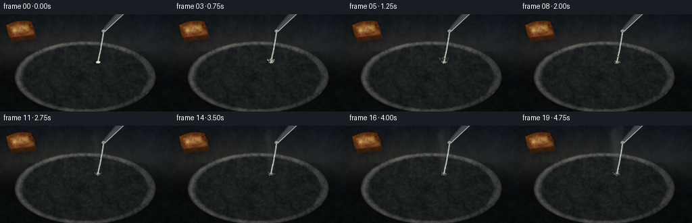
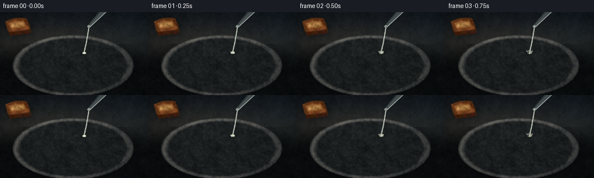
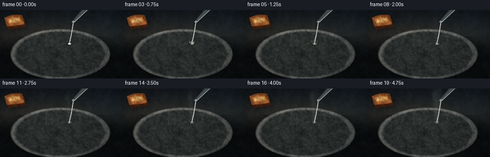
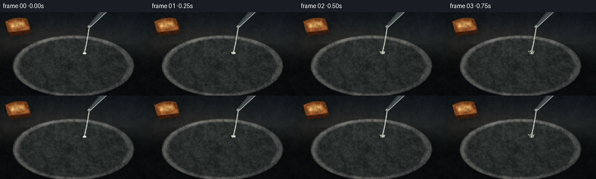
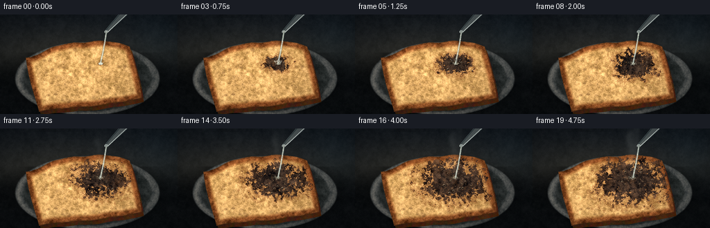
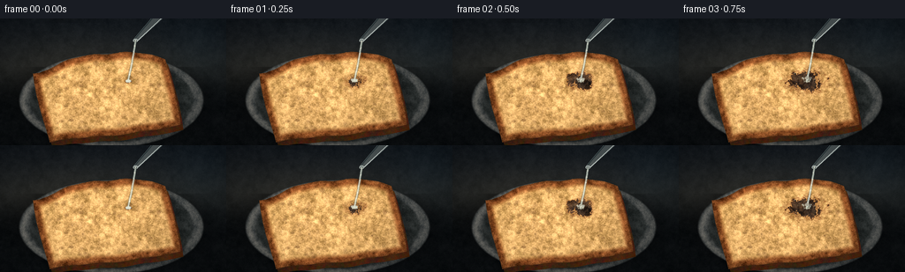
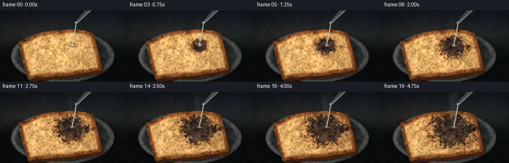
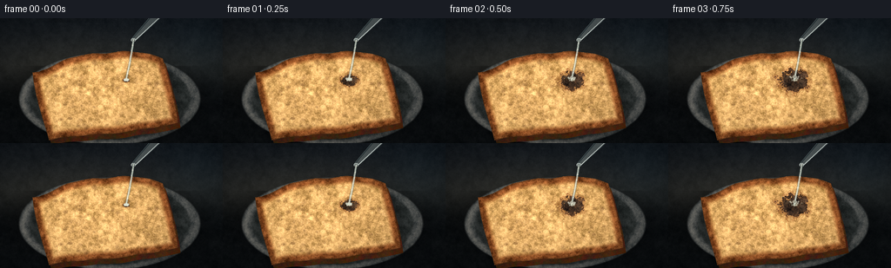

CODING AGENTS AS PIXEL WORLD MODELS
traex/DeepSeek-V4.1-Flash · material_0038
点击播放 · 原生 RGB 像素
逐轮保存的候选
回放视频、检查图与代码变化。
每份候选均可单独播放。实际图片检查记录在下方工具轨迹中。
候选 01播放与检查图
点击播放 · 原生 RGB 像素


展开代码变化
--- 上一保存版本
+++ 本次保存版本
@@ -0,0 +1,549 @@
+"""Procedural RGB timelapse: sulfuric acid charring a piece of toast."""
+
+from __future__ import annotations
+
+import math
+from pathlib import Path
+
+import numpy as np
+from PIL import Image, ImageDraw, ImageFilter
+from scipy.ndimage import distance_transform_edt, gaussian_filter
+
+import artifact_io
+
+
+WIDTH = 256
+HEIGHT = 144
+FRAMES = 20
+FPS = 4.0
+S = 4
+RW = WIDTH * S
+RH = HEIGHT * S
+SEED = 38117
+
+
+def smoothstep(edge0: float, edge1: float, value: np.ndarray) -> np.ndarray:
+ t = np.clip((value - edge0) / (edge1 - edge0), 0.0, 1.0)
+ return t * t * (3.0 - 2.0 * t)
+
+
+def fbm(shape: tuple[int, int], rng: np.random.Generator) -> np.ndarray:
+ out = np.zeros(shape, dtype=np.float32)
+ total = 0.0
+ for sigma, weight in ((1.4, 0.28), (5.5, 0.33), (17.0, 0.25), (48.0, 0.14)):
+ layer = gaussian_filter(rng.standard_normal(shape).astype(np.float32), sigma)
+ layer /= max(float(layer.std()), 1e-6)
+ out += layer * weight
+ total += weight
+ out /= total
+ out /= max(float(out.std()), 1e-6)
+ return np.clip(out, -2.7, 2.7)
+
+
+def polygon_mask(points: np.ndarray) -> np.ndarray:
+ image = Image.new("L", (RW, RH), 0)
+ ImageDraw.Draw(image).polygon([(float(x), float(y)) for x, y in points], fill=255)
+ return np.asarray(image, dtype=np.float32) / 255.0
+
+
+def rotate_points(points: np.ndarray, center: tuple[float, float], angle: float) -> np.ndarray:
+ a = math.radians(angle)
+ c, s = math.cos(a), math.sin(a)
+ p = points.copy()
+ p[:, 0] -= center[0]
+ p[:, 1] -= center[1]
+ return np.column_stack((p[:, 0] * c - p[:, 1] * s, p[:, 0] * s + p[:, 1] * c)) + center
+
+
+def bread_outline(
+ center: tuple[float, float], width: float, height: float, angle: float
+) -> np.ndarray:
+ points: list[tuple[float, float]] = []
+ xs = np.linspace(-0.43, 0.43, 92)
+ for x in xs:
+ y = -0.40 + 0.125 * (x / 0.43) ** 2
+ y += 0.010 * math.sin(15.0 * x + 1.0) + 0.005 * math.sin(31.0 * x)
+ points.append((x, y))
+
+ t = np.linspace(0.0, 1.0, 22)
+ for u in t[1:]:
+ x = 0.43 + 0.055 * math.sin(0.5 * math.pi * u)
+ y = -0.275 + 0.735 * u + 0.006 * math.sin(5.0 * u)
+ points.append((x, y))
+
+ xs = np.linspace(0.415, -0.415, 76)
+ for x in xs:
+ y = 0.478 + 0.009 * math.sin(10.0 * x + 0.8) + 0.005 * math.sin(25.0 * x)
+ points.append((x, y))
+
+ t = np.linspace(0.0, 1.0, 22)
+ for u in t[1:]:
+ x = -0.415 - 0.060 * math.sin(0.5 * math.pi * u)
+ y = 0.46 - 0.73 * u - 0.005 * math.sin(6.0 * u)
+ points.append((x, y))
+
+ local = np.asarray(points, dtype=np.float32)
+ local[:, 0] *= width
+ local[:, 1] *= height
+ local[:, 0] += center[0]
+ local[:, 1] += center[1]
+ return rotate_points(local, center, angle)
+
+
+def rgba_overlay() -> tuple[Image.Image, ImageDraw.ImageDraw]:
+ image = Image.new("RGBA", (RW, RH), (0, 0, 0, 0))
+ return image, ImageDraw.Draw(image)
+
+
+def composite_rgba(base: np.ndarray, image: Image.Image) -> np.ndarray:
+ layer = np.asarray(image, dtype=np.float32)
+ alpha = layer[..., 3:4] / 255.0
+ return base * (1.0 - alpha) + layer[..., :3] * alpha
+
+
+def build_scene_assets() -> tuple[np.ndarray, np.ndarray, np.ndarray, np.ndarray]:
+ rng = np.random.default_rng(SEED)
+ yy, xx = np.mgrid[0:RH, 0:RW].astype(np.float32)
+ x = (xx + 0.5) / S
+ y = (yy + 0.5) / S
+ yn = y / HEIGHT
+ xn = x / WIDTH
+
+ # A quiet, cool laboratory bench with a soft pool of warm key light.
+ top = np.array([17.0, 22.0, 27.0], dtype=np.float32)
+ middle = np.array([35.0, 37.0, 36.0], dtype=np.float32)
+ bottom = np.array([11.0, 14.0, 16.0], dtype=np.float32)
+ lower = smoothstep(0.30, 0.68, yn)
+ upper = smoothstep(0.00, 0.48, yn)
+ bg = top[None, None, :] * (1.0 - upper[..., None])
+ bg += middle[None, None, :] * upper[..., None]
+ bg = bg * (1.0 - lower[..., None]) + bottom[None, None, :] * lower[..., None]
+
+ broad_light = np.exp(
+ -(((xn - 0.35) / 0.48) ** 2 + ((yn - 0.38) / 0.38) ** 2) * 1.7
+ )
+ bg += broad_light[..., None] * np.array([10.0, 7.5, 4.0], dtype=np.float32)
+ cool_rim = np.exp(
+ -(((xn - 0.91) / 0.24) ** 2 + ((yn - 0.20) / 0.42) ** 2) * 2.0
+ )
+ bg += cool_rim[..., None] * np.array([1.5, 5.0, 7.0], dtype=np.float32)
+ bg += (fbm((RH, RW), rng)[..., None] * 2.0)
+
+ # A restrained slate plate gives the toast a physical resting place.
+ pcx, pcy, prx, pry = 126.0, 93.0, 104.0, 53.0
+ plate_r = np.sqrt(((x - pcx) / prx) ** 2 + ((y - pcy) / pry) ** 2)
+ plate_shadow = np.exp(-(((plate_r - 0.92) / 0.22) ** 2)) * (y > 55.0)
+ bg *= 1.0 - 0.30 * plate_shadow[..., None]
+
+ outer = smoothstep(1.015, 0.985, plate_r)
+ inner = smoothstep(0.915, 0.875, plate_r)
+ plate_texture = fbm((RH, RW), rng)
+ plate_base = np.stack(
+ (
+ 47.0 + 9.0 * plate_texture + 5.0 * (1.0 - yn),
+ 50.0 + 8.0 * plate_texture + 5.0 * (1.0 - yn),
+ 50.0 + 7.0 * plate_texture + 5.0 * (1.0 - yn),
+ ),
+ axis=-1,
+ )
+ rim = np.exp(-((plate_r - 0.955) / 0.034) ** 2)
+ top_left = np.clip((1.0 - xn) * 1.1 + (1.0 - yn) * 0.45, 0.0, 1.0)
+ plate_base += rim[..., None] * top_left[..., None] * np.array([34.0, 31.0, 27.0])
+ inner_color = np.stack(
+ (
+ 26.0 + 4.0 * plate_texture,
+ 29.0 + 4.0 * plate_texture,
+ 29.0 + 4.0 * plate_texture,
+ ),
+ axis=-1,
+ )
+ plate_color = plate_base * (1.0 - inner[..., None]) + inner_color * inner[..., None]
+ bg = bg * (1.0 - outer[..., None]) + plate_color * outer[..., None]
+
+ toast_center = (119.0, 82.0)
+ outer_poly = bread_outline(toast_center, 166.0, 106.0, -6.5)
+ inner_poly = bread_outline((toast_center[0] - 0.6, toast_center[1] - 0.8), 149.0, 92.0, -6.5)
+ face_mask = polygon_mask(outer_poly)
+ inner_mask = polygon_mask(inner_poly)
+
+ # Contact shadow and a dark, slightly toasted slice edge.
+ shadow_mask = gaussian_filter(face_mask, sigma=5.5 * S)
+ shadow_mask = np.roll(np.roll(shadow_mask, 5 * S, axis=0), 4 * S, axis=1)
+ bg *= 1.0 - 0.45 * shadow_mask[..., None]
+
+ side_poly = outer_poly + np.array([3.0 * S, 6.0 * S], dtype=np.float32)
+ side_mask = polygon_mask(side_poly)
+ side_color = np.stack(
+ (
+ 66.0 + 8.0 * fbm((RH, RW), rng),
+ 34.0 + 5.0 * fbm((RH, RW), rng),
+ 15.0 + 3.0 * fbm((RH, RW), rng),
+ ),
+ axis=-1,
+ )
+ bg = bg * (1.0 - side_mask[..., None]) + side_color * side_mask[..., None]
+
+ dist = distance_transform_edt(face_mask > 0.5).astype(np.float32) / S
+ fine = fbm((RH, RW), rng)
+ mid = fbm((RH, RW), rng)
+ coarse = fbm((RH, RW), rng)
+
+ interior = np.stack(
+ (
+ 199.0 + 22.0 * fine + 7.0 * mid,
+ 145.0 + 18.0 * fine + 5.0 * mid,
+ 82.0 + 13.0 * fine + 4.0 * mid,
+ ),
+ axis=-1,
+ )
+ crust = np.stack(
+ (
+ 102.0 + 17.0 * mid + 8.0 * coarse,
+ 53.0 + 11.0 * mid + 4.0 * coarse,
+ 23.0 + 7.0 * mid + 3.0 * coarse,
+ ),
+ axis=-1,
+ )
+ crust_weight = 1.0 - smoothstep(4.0, 11.0, dist)
+ toast = interior * (1.0 - crust_weight[..., None]) + crust * crust_weight[..., None]
+
+ light = 0.89 + 0.16 * (1.0 - xn) + 0.055 * (1.0 - yn)
+ toast *= light[..., None]
+ toast *= (1.0 - 0.22 * np.exp(-(dist / 1.7) ** 2)[..., None])
+
+ toast_marks = smoothstep(0.65, 1.7, mid) * (1.0 - crust_weight)
+ toast -= toast_marks[..., None] * np.array([14.0, 9.0, 4.0], dtype=np.float32)
+ toast += (
+ np.exp(-((dist - 7.5) / 2.8) ** 2)[..., None]
+ * np.clip(1.0 - xn + 0.25 * (1.0 - yn), 0.0, 1.0)[..., None]
+ * np.array([20.0, 12.0, 4.0], dtype=np.float32)
+ )
+
+ # Small pores, crumbs, and toasted specks make the bread legible at 256 px.
+ pores, draw = rgba_overlay()
+ for _ in range(105):
+ px = int(rng.uniform(40.0, 198.0) * S)
+ py = int(rng.uniform(30.0, 137.0) * S)
+ if face_mask[py, px] < 0.5 or dist[py, px] < 8.0:
+ continue
+ rx = rng.uniform(0.65, 3.0) * S
+ ry = rx * rng.uniform(0.55, 1.15)
+ alpha = int(rng.uniform(28.0, 82.0))
+ draw.ellipse((px - rx, py - ry, px + rx, py + ry), fill=(73, 40, 21, alpha))
+ if rx > 1.4 * S:
+ draw.arc(
+ (px - rx, py - ry, px + rx, py + ry),
+ 195,
+ 335,
+ fill=(234, 178, 105, alpha // 2),
+ width=max(1, S // 2),
+ )
+ for _ in range(260):
+ px = int(rng.uniform(40.0, 198.0) * S)
+ py = int(rng.uniform(30.0, 137.0) * S)
+ if face_mask[py, px] < 0.5:
+ continue
+ radius = rng.uniform(0.25, 0.9) * S
+ shade = int(rng.uniform(35.0, 75.0))
+ draw.ellipse((px - radius, py - radius, px + radius, py + radius), fill=(64, 34, 18, shade))
+ pores = pores.filter(ImageFilter.GaussianBlur(0.45 * S))
+ toast = composite_rgba(toast, pores)
+
+ # Soft crust rim light.
+ rim_layer, rim_draw = rgba_overlay()
+ rim_draw.line(
+ [(float(px), float(py)) for px, py in outer_poly[:92]],
+ fill=(211, 126, 57, 70),
+ width=max(1, int(1.2 * S)),
+ joint="curve",
+ )
+ rim_layer = rim_layer.filter(ImageFilter.GaussianBlur(0.85 * S))
+ toast = composite_rgba(toast, rim_layer)
+
+ bg = bg * (1.0 - face_mask[..., None]) + toast * face_mask[..., None]
+ return bg, face_mask, outer_poly, np.stack((x, y), axis=-1)
+
+
+def build_bubbles() -> list[tuple[float, float, float, float, float, float]]:
+ rng = np.random.default_rng(SEED + 91)
+ bubbles = []
+ for _ in range(78):
+ angle = rng.uniform(0.0, math.tau)
+ radius = math.sqrt(rng.uniform(0.02, 1.0))
+ px = 144.5 + math.cos(angle) * radius * 36.0
+ py = 76.5 + math.sin(angle) * radius * 23.0
+ size = rng.uniform(0.65, 2.75)
+ birth = rng.uniform(0.04, 0.88)
+ life = rng.uniform(0.12, 0.44)
+ phase = rng.uniform(0.0, math.tau)
+ bubbles.append((px, py, size, birth, life, phase))
+ return bubbles
+
+
+def draw_smoke(t: float, impact: tuple[float, float]) -> Image.Image:
+ smoke, draw = rgba_overlay()
+ steam_t = float(np.clip((t - 0.08) / 0.92, 0.0, 1.0))
+ if steam_t <= 0.0:
+ return smoke
+
+ for wisp in range(7):
+ points = []
+ phase = 0.8 * wisp + t * 2.1
+ drift = (wisp - 3.0) * 2.1
+ for j in range(28):
+ s = j / 27.0
+ y = impact[1] - 2.0 - s * (47.0 + 17.0 * steam_t + wisp * 2.0)
+ x = impact[0] + drift * s + 3.6 * math.sin(2.2 * s + phase)
+ x += 1.5 * math.sin(6.0 * s + 1.7 * wisp)
+ points.append((x * S, y * S))
+ alpha = int((19.0 + 20.0 * steam_t) * (0.72 + 0.28 * math.sin(phase)))
+ width = max(1, int((1.5 + 2.0 * steam_t) * S))
+ draw.line(points, fill=(219, 226, 218, alpha), width=width, joint="curve")
+
+ for wisp in range(9):
+ phase = 1.1 * wisp
+ px = impact[0] + math.sin(phase + t * 4.0) * (4.0 + wisp * 0.8)
+ py = impact[1] - 8.0 - ((wisp * 9.7 + t * 56.0) % 67.0)
+ radius = (0.9 + (wisp % 3) * 0.6) * S
+ draw.ellipse(
+ (px * S - radius, py * S - radius, px * S + radius, py * S + radius),
+ fill=(223, 228, 218, int(10 + 20 * steam_t)),
+ )
+
+ return smoke.filter(ImageFilter.GaussianBlur(3.4 * S))
+
+
+def draw_pipette_and_stream(t: float, impact: tuple[float, float]) -> Image.Image:
+ layer, draw = rgba_overlay()
+ tip = (153.2, 25.0)
+ top = (199.0, -23.0)
+ dx, dy = top[0] - tip[0], top[1] - tip[1]
+ length = math.hypot(dx, dy)
+ nx, ny = -dy / length, dx / length
+
+ # Outer glass body.
+ p_top = np.array(top) * S
+ p_tip = np.array(tip) * S
+ n = np.array([nx, ny]) * S
+ outer_quad = [
+ tuple(p_top + n * 6.8),
+ tuple(p_tip + n * 2.4),
+ tuple(p_tip - n * 2.4),
+ tuple(p_top - n * 6.8),
+ ]
+ draw.polygon(outer_quad, fill=(99, 118, 120, 102), outline=(201, 220, 216, 190))
+ inner_quad = [
+ tuple(p_top + n * 4.8),
+ tuple(p_tip + n * 1.55),
+ tuple(p_tip - n * 1.55),
+ tuple(p_top - n * 4.8),
+ ]
+ draw.polygon(inner_quad, fill=(200, 216, 209, 77))
+
+ # Glass highlights and a darker optical edge.
+ left = [(top[0] + nx * 5.3, top[1] + ny * 5.3), (tip[0] + nx * 1.8, tip[1] + ny * 1.8)]
+ right = [(top[0] - nx * 5.7, top[1] - ny * 5.7), (tip[0] - nx * 2.0, tip[1] - ny * 2.0)]
+ draw.line([(x * S, y * S) for x, y in left], fill=(239, 249, 240, 215), width=max(1, S))
+ draw.line([(x * S, y * S) for x, y in right], fill=(54, 70, 72, 145), width=max(1, S))
+ draw.ellipse(
+ ((tip[0] - 2.7) * S, (tip[1] - 2.0) * S, (tip[0] + 2.7) * S, (tip[1] + 2.0) * S),
+ fill=(206, 222, 214, 150),
+ outline=(238, 247, 237, 220),
+ width=max(1, S // 2),
+ )
+
+ # A continuous, slightly wavering, almost colorless liquid stream.
+ stream_points = []
+ for j in range(38):
+ s = j / 37.0
+ y = tip[1] + (impact[1] - tip[1]) * s
+ x = tip[0] + (impact[0] - tip[0]) * s + 0.55 * math.sin(math.pi * s + 0.3)
+ stream_points.append((x * S, y * S))
+ draw.line(stream_points, fill=(73, 85, 79, 135), width=max(2, int(2.8 * S)), joint="curve")
+ draw.line(stream_points, fill=(216, 230, 215, 190), width=max(1, int(1.75 * S)), joint="curve")
+ draw.line(
+ [(x - 0.55 * S, y) for x, y in stream_points],
+ fill=(246, 250, 232, 175),
+ width=max(1, int(0.7 * S)),
+ joint="curve",
+ )
+ for bead in range(7):
+ s = (t * 3.7 + bead / 7.0) % 1.0
+ index = int(s * (len(stream_points) - 1))
+ px, py = stream_points[index]
+ radius = (0.72 + 0.18 * math.sin(bead * 2.3 + t * 11.0)) * S
+ draw.ellipse(
+ (px - radius, py - radius, px + radius, py + radius),
+ fill=(248, 250, 232, 205),
+ )
+
+ # The impact meniscus and the first tiny splash droplets.
+ ripple = (0.55 + 0.5 * t) * S
+ draw.ellipse(
+ (
+ (impact[0] - ripple) * S,
+ (impact[1] - ripple * 0.38) * S,
+ (impact[0] + ripple) * S,
+ (impact[1] + ripple * 0.38) * S,
+ ),
+ outline=(226, 231, 206, 105),
+ width=max(1, S // 2),
+ )
+ if t < 0.45:
+ splash_t = t / 0.45
+ for k in range(10):
+ angle = -2.9 + k * 0.33
+ distance = (2.0 + 11.0 * splash_t) * (0.65 + 0.35 * math.sin(k * 2.1))
+ px = impact[0] + math.cos(angle) * distance
+ py = impact[1] + math.sin(angle) * distance * 0.52 - 7.0 * splash_t
+ radius = max(0.45, 1.3 * (1.0 - splash_t)) * S
+ draw.ellipse(
+ (px * S - radius, py * S - radius, px * S + radius, py * S + radius),
+ fill=(235, 239, 219, int(210 * (1.0 - splash_t))),
+ )
+ return layer
+
+
+def render_frame(
+ index: int,
+ bg: np.ndarray,
+ face_mask: np.ndarray,
+ bubbles: list[tuple[float, float, float, float, float, float]],
+ xgrid: np.ndarray,
+) -> np.ndarray:
+ t = index / (FRAMES - 1)
+ rng = np.random.default_rng(SEED + 700 + index)
+ x = xgrid[..., 0]
+ y = xgrid[..., 1]
+ impact = (145.0, 71.5)
+
+ # The acid front expands as an irregular ellipse, faster than a simple radial burn.
+ rt = float(np.clip((t - 0.015) / 0.985, 0.0, 1.0))
+ growth = 0.065 + 0.935 * rt**0.72
+ cx = impact[0] + 0.8 * t
+ cy = impact[1] + 4.2 * t
+ rx = 42.5 * growth
+ ry = 27.0 * growth
+ shape_noise = fbm((RH, RW), rng)
+ q = np.sqrt(((x - cx) / max(rx, 0.8)) ** 2 + ((y - cy) / max(ry, 0.8)) ** 2)
+ q += 0.18 * shape_noise + 0.025 * np.sin(0.28 * x + 0.17 * y + 3.0 * t)
+ char = np.clip((1.03 - q) / 0.16, 0.0, 1.0)
+ char *= face_mask
+
+ wet_q = np.sqrt(((x - cx) / max(rx * 1.34, 1.1)) ** 2 + ((y - cy) / max(ry * 1.36, 1.0)) ** 2)
+ wet_q += 0.12 * shape_noise
+ wet = np.clip((1.10 - wet_q) / 0.18, 0.0, 1.0) * face_mask
+ edge = np.exp(-((q - 1.0) / 0.16) ** 2) * face_mask
+
+ frame = bg.copy()
+ toast_pixels = frame.copy()
+ wet_tint = np.array([92.0, 53.0, 27.0], dtype=np.float32)
+ toast_pixels = toast_pixels * (1.0 - 0.31 * wet[..., None]) + wet_tint * (0.31 * wet[..., None])
+ toast_pixels += edge[..., None] * np.array([17.0, 7.0, 1.5], dtype=np.float32)
+
+ char_texture = fbm((RH, RW), rng)
+ char_color = np.stack(
+ (
+ 34.0 + 15.0 * char_texture + 7.0 * np.maximum(-shape_noise, 0.0),
+ 27.0 + 11.0 * char_texture + 3.0 * np.maximum(-shape_noise, 0.0),
+ 23.0 + 8.0 * char_texture,
+ ),
+ axis=-1,
+ )
+ char_color += edge[..., None] * np.array([30.0, 13.0, 3.0], dtype=np.float32)
+ blend = np.clip(char * (0.84 + 0.16 * smoothstep(0.02, 0.35, t)), 0.0, 0.98)
+ toast_pixels = toast_pixels * (1.0 - blend[..., None]) + char_color * blend[..., None]
+
+ # Glisten from the still-wet center and a few thin reflective highlights.
+ glint = wet * np.exp(-(((x - (cx - 5.0)) / 8.0) ** 2 + ((y - (cy - 4.0)) / 2.2) ** 2))
+ glint += wet * np.exp(-(((x - (cx + 8.0)) / 2.0) ** 2 + ((y - (cy + 3.0)) / 5.0) ** 2)) * 0.45
+ toast_pixels += glint[..., None] * np.array([26.0, 23.0, 16.0], dtype=np.float32)
+
+ frame = frame * (1.0 - face_mask[..., None]) + toast_pixels * face_mask[..., None]
+
+ # Reaction bubbles: dark volumes, warm rims, and one small specular highlight each.
+ bubble_layer, bubble_draw = rgba_overlay()
+ for px, py, size, birth, life, phase in bubbles:
+ local_age = (t - birth) / max(life, 1e-3)
+ if local_age <= 0.0 or local_age >= 1.0:
+ continue
+ hx, hy = int(np.clip(px * S, 0, RW - 1)), int(np.clip(py * S, 0, RH - 1))
+ if char[hy, hx] < 0.16:
+ continue
+ envelope = math.sin(math.pi * local_age) ** 0.55
+ radius = size * envelope * (0.80 + 0.20 * math.sin(phase + local_age * 8.0)) * S
+ if radius < 0.55:
+ continue
+ bx, by = px * S, (py - 0.45 * envelope) * S
+ bubble_draw.ellipse(
+ (bx - radius, by - radius * 0.85, bx + radius, by + radius * 0.85),
+ fill=(13, 12, 11, 175),
+ outline=(139, 104, 70, 155),
+ width=max(1, S // 2),
+ )
+ bubble_draw.arc(
+ (bx - radius, by - radius * 0.85, bx + radius, by + radius * 0.85),
+ 198,
+ 326,
+ fill=(236, 206, 158, 155),
+ width=max(1, S // 2),
+ )
+ if radius > 1.1 * S:
+ hr = max(1.0, radius * 0.18)
+ bubble_draw.ellipse(
+ (bx - radius * 0.34 - hr, by - radius * 0.35 - hr, bx - radius * 0.34 + hr, by - radius * 0.35 + hr),
+ fill=(249, 238, 210, 170),
+ )
+ frame = composite_rgba(frame, bubble_layer)
+
+ # Foam at the contact point during the active pour.
+ foam_layer, foam_draw = rgba_overlay()
+ for k in range(18):
+ angle = k * 2.399 + t * 2.2
+ radius = (1.0 + 5.4 * (0.5 + 0.5 * math.sin(k * 4.1))) * (0.45 + 0.55 * growth)
+ px = impact[0] + math.cos(angle) * radius
+ py = impact[1] + math.sin(angle) * radius * 0.52 - 0.8
+ rr = (0.45 + 0.45 * (0.5 + 0.5 * math.sin(k * 7.3 + t * 9.0))) * S
+ alpha = int(75 + 85 * (1.0 - min(1.0, t / 0.85)))
+ foam_draw.ellipse(
+ (px * S - rr, py * S - rr, px * S + rr, py * S + rr),
+ fill=(210, 207, 173, alpha),
+ outline=(242, 239, 209, min(220, alpha + 30)),
+ width=max(1, S // 2),
+ )
+ foam_layer = foam_layer.filter(ImageFilter.GaussianBlur(0.35 * S))
+ frame = composite_rgba(frame, foam_layer)
+
+ # Steam and vapor sit between the hot surface and the incoming glassware.
+ frame = composite_rgba(frame, draw_smoke(t, impact))
+ frame = composite_rgba(frame, draw_pipette_and_stream(t, impact))
+
+ # Fine exposure variation, vignette, and a final subtle color grade.
+ yy, xx = np.mgrid[0:RH, 0:RW].astype(np.float32)
+ vx = (xx + 0.5) / RW * 2.0 - 1.0
+ vy = (yy + 0.5) / RH * 2.0 - 1.0
+ vignette = np.clip(1.0 - 0.22 * (vx * vx + 0.62 * vy * vy), 0.70, 1.0)
+ frame *= vignette[..., None]
+ frame += rng.normal(0.0, 1.15, (RH, RW, 1)).astype(np.float32)
+ frame = np.clip(frame, 0.0, 255.0)
+ frame = np.clip((frame / 255.0) ** 0.96 * 255.0, 0.0, 255.0)
+
+ image = Image.fromarray(frame.astype(np.uint8), "RGB")
+ image = image.resize((WIDTH, HEIGHT), Image.Resampling.LANCZOS)
+ return np.asarray(image, dtype=np.uint8)
+
+
+def main() -> None:
+ case_dir = Path(__file__).resolve().parent
+ bg, face_mask, _, xgrid = build_scene_assets()
+ bubbles = build_bubbles()
+ frames = [
+ render_frame(index, bg, face_mask, bubbles, xgrid)
+ for index in range(FRAMES)
+ ]
+ artifact_io.save(frames, case_dir)
+ print(f"Saved {len(frames)} frames to {case_dir / 'pixels.npz'}")
+
+
+if __name__ == "__main__":
+ main()
候选 02播放与检查图
点击播放 · 原生 RGB 像素


展开代码变化
--- 上一保存版本
+++ 本次保存版本
@@ -140,9 +140,9 @@
plate_texture = fbm((RH, RW), rng)
plate_base = np.stack(
(
- 47.0 + 9.0 * plate_texture + 5.0 * (1.0 - yn),
- 50.0 + 8.0 * plate_texture + 5.0 * (1.0 - yn),
- 50.0 + 7.0 * plate_texture + 5.0 * (1.0 - yn),
+ 62.0 + 11.0 * plate_texture + 7.0 * (1.0 - yn),
+ 65.0 + 10.0 * plate_texture + 7.0 * (1.0 - yn),
+ 64.0 + 9.0 * plate_texture + 7.0 * (1.0 - yn),
),
axis=-1,
)
@@ -151,9 +151,9 @@
plate_base += rim[..., None] * top_left[..., None] * np.array([34.0, 31.0, 27.0])
inner_color = np.stack(
(
- 26.0 + 4.0 * plate_texture,
- 29.0 + 4.0 * plate_texture,
- 29.0 + 4.0 * plate_texture,
+ 39.0 + 6.0 * plate_texture,
+ 43.0 + 6.0 * plate_texture,
+ 42.0 + 6.0 * plate_texture,
),
axis=-1,
)
@@ -190,24 +190,24 @@
interior = np.stack(
(
- 199.0 + 22.0 * fine + 7.0 * mid,
- 145.0 + 18.0 * fine + 5.0 * mid,
- 82.0 + 13.0 * fine + 4.0 * mid,
+ 218.0 + 25.0 * fine + 8.0 * mid,
+ 166.0 + 21.0 * fine + 6.0 * mid,
+ 98.0 + 16.0 * fine + 5.0 * mid,
),
axis=-1,
)
crust = np.stack(
(
- 102.0 + 17.0 * mid + 8.0 * coarse,
- 53.0 + 11.0 * mid + 4.0 * coarse,
- 23.0 + 7.0 * mid + 3.0 * coarse,
+ 124.0 + 19.0 * mid + 9.0 * coarse,
+ 67.0 + 13.0 * mid + 5.0 * coarse,
+ 31.0 + 8.0 * mid + 3.0 * coarse,
),
axis=-1,
)
crust_weight = 1.0 - smoothstep(4.0, 11.0, dist)
toast = interior * (1.0 - crust_weight[..., None]) + crust * crust_weight[..., None]
- light = 0.89 + 0.16 * (1.0 - xn) + 0.055 * (1.0 - yn)
+ light = 1.02 + 0.14 * (1.0 - xn) + 0.05 * (1.0 - yn)
toast *= light[..., None]
toast *= (1.0 - 0.22 * np.exp(-(dist / 1.7) ** 2)[..., None])
@@ -229,7 +229,7 @@
rx = rng.uniform(0.65, 3.0) * S
ry = rx * rng.uniform(0.55, 1.15)
alpha = int(rng.uniform(28.0, 82.0))
- draw.ellipse((px - rx, py - ry, px + rx, py + ry), fill=(73, 40, 21, alpha))
+ draw.ellipse((px - rx, py - ry, px + rx, py + ry), fill=(91, 51, 27, alpha))
if rx > 1.4 * S:
draw.arc(
(px - rx, py - ry, px + rx, py + ry),
@@ -244,8 +244,8 @@
if face_mask[py, px] < 0.5:
continue
radius = rng.uniform(0.25, 0.9) * S
- shade = int(rng.uniform(35.0, 75.0))
- draw.ellipse((px - radius, py - radius, px + radius, py + radius), fill=(64, 34, 18, shade))
+ shade = int(rng.uniform(28.0, 62.0))
+ draw.ellipse((px - radius, py - radius, px + radius, py + radius), fill=(77, 41, 22, shade))
pores = pores.filter(ImageFilter.GaussianBlur(0.45 * S))
toast = composite_rgba(toast, pores)
@@ -419,39 +419,39 @@
# The acid front expands as an irregular ellipse, faster than a simple radial burn.
rt = float(np.clip((t - 0.015) / 0.985, 0.0, 1.0))
- growth = 0.065 + 0.935 * rt**0.72
+ growth = 0.065 + 0.935 * rt**0.62
cx = impact[0] + 0.8 * t
cy = impact[1] + 4.2 * t
- rx = 42.5 * growth
- ry = 27.0 * growth
+ rx = 49.0 * growth
+ ry = 31.0 * growth
shape_noise = fbm((RH, RW), rng)
q = np.sqrt(((x - cx) / max(rx, 0.8)) ** 2 + ((y - cy) / max(ry, 0.8)) ** 2)
- q += 0.18 * shape_noise + 0.025 * np.sin(0.28 * x + 0.17 * y + 3.0 * t)
- char = np.clip((1.03 - q) / 0.16, 0.0, 1.0)
+ q += 0.24 * shape_noise + 0.032 * np.sin(0.28 * x + 0.17 * y + 3.0 * t)
+ char = np.clip((1.05 - q) / 0.14, 0.0, 1.0)
char *= face_mask
wet_q = np.sqrt(((x - cx) / max(rx * 1.34, 1.1)) ** 2 + ((y - cy) / max(ry * 1.36, 1.0)) ** 2)
- wet_q += 0.12 * shape_noise
+ wet_q += 0.16 * shape_noise
wet = np.clip((1.10 - wet_q) / 0.18, 0.0, 1.0) * face_mask
edge = np.exp(-((q - 1.0) / 0.16) ** 2) * face_mask
frame = bg.copy()
toast_pixels = frame.copy()
- wet_tint = np.array([92.0, 53.0, 27.0], dtype=np.float32)
- toast_pixels = toast_pixels * (1.0 - 0.31 * wet[..., None]) + wet_tint * (0.31 * wet[..., None])
- toast_pixels += edge[..., None] * np.array([17.0, 7.0, 1.5], dtype=np.float32)
+ wet_tint = np.array([119.0, 67.0, 31.0], dtype=np.float32)
+ toast_pixels = toast_pixels * (1.0 - 0.37 * wet[..., None]) + wet_tint * (0.37 * wet[..., None])
+ toast_pixels += edge[..., None] * np.array([22.0, 9.0, 2.0], dtype=np.float32)
char_texture = fbm((RH, RW), rng)
char_color = np.stack(
(
- 34.0 + 15.0 * char_texture + 7.0 * np.maximum(-shape_noise, 0.0),
- 27.0 + 11.0 * char_texture + 3.0 * np.maximum(-shape_noise, 0.0),
- 23.0 + 8.0 * char_texture,
+ 49.0 + 19.0 * char_texture + 9.0 * np.maximum(-shape_noise, 0.0),
+ 37.0 + 14.0 * char_texture + 4.0 * np.maximum(-shape_noise, 0.0),
+ 31.0 + 10.0 * char_texture,
),
axis=-1,
)
char_color += edge[..., None] * np.array([30.0, 13.0, 3.0], dtype=np.float32)
- blend = np.clip(char * (0.84 + 0.16 * smoothstep(0.02, 0.35, t)), 0.0, 0.98)
+ blend = np.clip(char * (0.91 + 0.09 * smoothstep(0.02, 0.35, t)), 0.0, 0.98)
toast_pixels = toast_pixels * (1.0 - blend[..., None]) + char_color * blend[..., None]
# Glisten from the still-wet center and a few thin reflective highlights.
候选 03播放与检查图
点击播放 · 原生 RGB 像素


展开代码变化
--- 上一保存版本
+++ 本次保存版本
@@ -42,7 +42,9 @@
def polygon_mask(points: np.ndarray) -> np.ndarray:
image = Image.new("L", (RW, RH), 0)
- ImageDraw.Draw(image).polygon([(float(x), float(y)) for x, y in points], fill=255)
+ ImageDraw.Draw(image).polygon(
+ [(float(x * S), float(y * S)) for x, y in points], fill=255
+ )
return np.asarray(image, dtype=np.float32) / 255.0
@@ -171,7 +173,7 @@
shadow_mask = np.roll(np.roll(shadow_mask, 5 * S, axis=0), 4 * S, axis=1)
bg *= 1.0 - 0.45 * shadow_mask[..., None]
- side_poly = outer_poly + np.array([3.0 * S, 6.0 * S], dtype=np.float32)
+ side_poly = outer_poly + np.array([3.0, 6.0], dtype=np.float32)
side_mask = polygon_mask(side_poly)
side_color = np.stack(
(
@@ -252,7 +254,7 @@
# Soft crust rim light.
rim_layer, rim_draw = rgba_overlay()
rim_draw.line(
- [(float(px), float(py)) for px, py in outer_poly[:92]],
+ [(float(px * S), float(py * S)) for px, py in outer_poly[:92]],
fill=(211, 126, 57, 70),
width=max(1, int(1.2 * S)),
joint="curve",
候选 04播放与检查图
点击播放 · 原生 RGB 像素


展开代码变化
--- 上一保存版本
+++ 本次保存版本
@@ -412,6 +412,8 @@
face_mask: np.ndarray,
bubbles: list[tuple[float, float, float, float, float, float]],
xgrid: np.ndarray,
+ shape_noise: np.ndarray,
+ char_texture: np.ndarray,
) -> np.ndarray:
t = index / (FRAMES - 1)
rng = np.random.default_rng(SEED + 700 + index)
@@ -426,7 +428,6 @@
cy = impact[1] + 4.2 * t
rx = 49.0 * growth
ry = 31.0 * growth
- shape_noise = fbm((RH, RW), rng)
q = np.sqrt(((x - cx) / max(rx, 0.8)) ** 2 + ((y - cy) / max(ry, 0.8)) ** 2)
q += 0.24 * shape_noise + 0.032 * np.sin(0.28 * x + 0.17 * y + 3.0 * t)
char = np.clip((1.05 - q) / 0.14, 0.0, 1.0)
@@ -443,7 +444,6 @@
toast_pixels = toast_pixels * (1.0 - 0.37 * wet[..., None]) + wet_tint * (0.37 * wet[..., None])
toast_pixels += edge[..., None] * np.array([22.0, 9.0, 2.0], dtype=np.float32)
- char_texture = fbm((RH, RW), rng)
char_color = np.stack(
(
49.0 + 19.0 * char_texture + 9.0 * np.maximum(-shape_noise, 0.0),
@@ -530,7 +530,7 @@
frame = np.clip(frame, 0.0, 255.0)
frame = np.clip((frame / 255.0) ** 0.96 * 255.0, 0.0, 255.0)
- image = Image.fromarray(frame.astype(np.uint8), "RGB")
+ image = Image.fromarray(frame.astype(np.uint8))
image = image.resize((WIDTH, HEIGHT), Image.Resampling.LANCZOS)
return np.asarray(image, dtype=np.uint8)
@@ -539,8 +539,10 @@
case_dir = Path(__file__).resolve().parent
bg, face_mask, _, xgrid = build_scene_assets()
bubbles = build_bubbles()
+ shape_noise = fbm((RH, RW), np.random.default_rng(SEED + 201))
+ char_texture = fbm((RH, RW), np.random.default_rng(SEED + 202))
frames = [
- render_frame(index, bg, face_mask, bubbles, xgrid)
+ render_frame(index, bg, face_mask, bubbles, xgrid, shape_noise, char_texture)
for index in range(FRAMES)
]
artifact_io.save(frames, case_dir)
可观测工具轨迹
实际执行的命令与返回图片。
命令 1exit 0
/bin/bash -c 'cat prompt.txt'
命令 2exit 0
/bin/bash -c 'cat GENERATION_RULES.md'
命令 3exit 0
/bin/bash -c 'cat task_spec.json'
命令 4exit 0
/bin/bash -c "printf 'FILES\\n'; rg --files -g '"'!**/.git/**'"' | sed -n '1,200p'; printf '\\nTOOLS\\n'; command -v ffmpeg || true; command -v python3 || true; command -v blender || true; command -v node || true; command -v convert || true; command -v magick || true"
命令 5exit 0
/bin/bash -c "sed -n '1,260p' artifact_io.py"
命令 6exit 0
/bin/bash -c "sed -n '1,260p' player_template.html"
命令 7exit 0
/bin/bash -c "python3 - <<'PY'
mods=['numpy','PIL','cv2','imageio','scipy','matplotlib','moviepy']
for m in mods:
try:
mod=__import__(m)
print(m, getattr(mod,'__version__','ok'))
except Exception as e:
print(m, 'NO', type(e).__name__)
PY"命令 8exit 0
/bin/bash -c 'command -v chafa || true; command -v viu || true; command -v jp2 || true; command -v img2txt || true; command -v ffplay || true; command -v chromium || true; command -v google-chrome || true; command -v playwright || true'
命令 9exit 0
/bin/bash -c 'python3 generate.py'
命令 10exit 0
/bin/bash -c "python3 - <<'PY'
from PIL import Image
import numpy as np
for i in [0,4,9,14,19]:
a=np.array(Image.open(f'frames/{i:02d}.png'))
print(i,'mean',a.mean((0,1)).round(1),'std',a.std().round(1),'dark%',(a.mean(2)<30).mean().round(3),'orange%',((a[:,:,0]>a[:,:,1]*1.3)&(a[:,:,0]>70)).mean().round(3))
PY"命令 11exit 0
/bin/bash -c "python3 - <<'PY'
from PIL import Image
import numpy as np
chars=' .:-=+*#%@'
for idx in [0,9,19]:
im=Image.open(f'frames/{idx:02d}.png').convert('L').resize((64,24))
a=np.array(im)
print('\\nFRAME',idx)
for row in a:
print(''.join(chars[min(9,int(v)*10//256)] for v in row))
PY"命令 12exit 0
/bin/bash -c "ls -lh pixels.npz index.html inspection.png frames | sed -n '1,30p'; python3 - <<'PY'
from PIL import Image
im=Image.open('inspection.png')
print('inspection',im.size,im.mode)
PY"命令 13exit 0
/bin/bash -c 'python3 generate.py'
命令 14exit 0
/bin/bash -c "python3 - <<'PY'
from PIL import Image
import numpy as np
chars=' .:-=+*#%@'
for idx in [0,9,19]:
im=Image.open(f'frames/{idx:02d}.png').convert('L').resize((64,24))
a=np.array(im)
print('\\nFRAME',idx)
for row in a:
print(''.join(chars[min(9,int(v)*10//256)] for v in row))
for i in [0,4,9,14,19]:
a=np.array(Image.open(f'frames/{i:02d}.png'))
print(i,'mean',a.mean((0,1)).round(1),'std',a.std().round(1),'dark%',(a.mean(2)<30).mean().round(3),'orange%',((a[:,:,0]>a[:,:,1]*1.3)&(a[:,:,0]>70)).mean().round(3))
PY"命令 15exit 0
/bin/bash -c "python3 - <<'PY'
from PIL import Image
import numpy as np
for i in [0,9,19]:
a=np.array(Image.open(f'frames/{i:02d}.png'))
print('frame',i)
for x,y in [(119,82),(100,70),(145,72),(119,110),(50,90),(220,90),(10,10),(128,20)]:
print((x,y),a[y,x].tolist())
PY"命令 16exit 0
/bin/bash -c 'python3 generate.py'
命令 17exit 0
/bin/bash -c "python3 - <<'PY'
from PIL import Image
import numpy as np
chars=' .:-=+*#%@'
for idx in [0,9,19]:
im=Image.open(f'frames/{idx:02d}.png').convert('L').resize((64,24))
a=np.array(im)
print('\\nFRAME',idx)
for row in a:
print(''.join(chars[min(9,int(v)*10//256)] for v in row))
for i in [0,4,9,14,19]:
a=np.array(Image.open(f'frames/{i:02d}.png'))
print(i,'mean',a.mean((0,1)).round(1),'std',a.std().round(1),'dark%',(a.mean(2)<30).mean().round(3),'orange%',((a[:,:,0]>a[:,:,1]*1.3)&(a[:,:,0]>70)).mean().round(3))
PY"命令 18exit 0
/bin/bash -c 'python3 generate.py'
命令 19exit 0
/bin/bash -c "python3 - <<'PY'
from PIL import Image
import numpy as np
frames=[np.array(Image.open(f'frames/{i:02d}.png')).astype(np.int16) for i in range(20)]
for i in range(1,20):
d=np.abs(frames[i]-frames[i-1])
print(i, 'MAE', round(float(d.mean()),2), 'pixels>12', round(float((d.max(2)>12).mean()),3))
a=frames[19]
print('shape',a.shape,'unique colors',len(np.unique(a.reshape(-1,3),axis=0)))
PY"命令 20exit 0
/bin/bash -c "python3 - <<'PY'
from PIL import Image
import numpy as np
palette=np.array([[10,12,14],[38,42,43],[78,56,39],[130,84,42],[190,132,65],[226,180,112],[105,120,116],[240,243,225]])
chars=' .:bBOTG@'
for idx in [0,9,19]:
a=np.array(Image.open(f'frames/{idx:02d}.png')).astype(float).resize((64,24,3)) if False else np.array(Image.open(f'frames/{idx:02d}.png').resize((64,24),Image.Resampling.BILINEAR)).astype(float)
d=((a[:,:,None,:]-palette[None,None,:,:])**2).sum(3)
idxs=d.argmin(2)
print('\\nFRAME',idx,' black dark brown toast orange crust glass light')
for row in idxs:
print(''.join(chars[i] for i in row))
PY"命令 21exit 0
/bin/bash -c "python3 - <<'PY'
from pathlib import Path
import json
import numpy as np
from PIL import Image
root=Path('.')
spec=json.loads((root/'task_spec.json').read_text())
frames=np.stack([np.asarray(Image.open(root/'frames'/f'{i:02d}.png')) for i in range(spec['frames'])])
assert frames.shape==(spec['frames'],spec['height'],spec['width'],3)
assert frames.dtype==np.uint8 and frames.min()>=0 and frames.max()<=255
packed=np.load(root/'pixels.npz')['pixels']
expected=((frames.astype(np.uint32)[:,:,:,0]<<16)|(frames.astype(np.uint32)[:,:,:,1]<<8)|frames.astype(np.uint32)[:,:,:,2]).transpose(1,2,0)
assert np.array_equal(packed, expected)
assert (root/'index.html').stat().st_size>100000
assert (root/'inspection.png').is_file()
print('PASS: 20 frames, 256x144 RGB uint8, 4 fps metadata, pixels.npz matches PNGs')
print('nonblank:', int(frames.min()), int(frames.max()), 'mean', tuple(np.round(frames.mean((0,1,2)),2)))
print('artifacts:', ', '.join(sorted(p.name for p in root.iterdir() if p.is_file())))
PY"保存候选 4 份；完成命令 21 次；可验证图片返回 0 张。原始 API 响应与完整日志保留在本地。